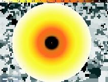
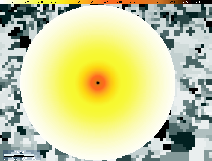
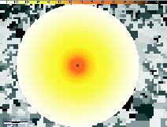
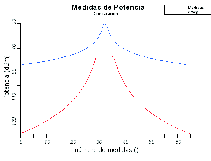
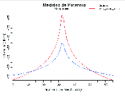
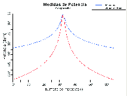
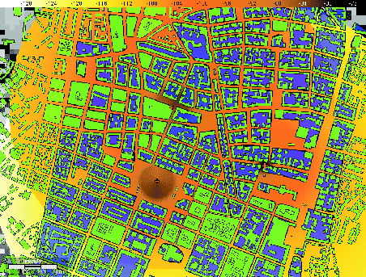

Siguiente: Verificación de línea de
Subir: Ejemplos de aplicación
Anterior: Variación de las características
Índice General
Considerando ahora una superficie suavemente ondulada, nuevamente
sin la presencia de manzanas ni edificaciones, se efectuará una
breve comparación del comportamiento de los modelos disponibles en
el software qué podrían emplearse en este escenario (modelo de
Erceg, tierra plana aproximada, y modelo de Okumura-Hata COST231,
sin utilización de alturas efectivas). En la figura
11.6 se muestra el resultado de las predicciones al
implementar dichos modelos, mientras que en la figura
11.7 se realiza una comparación de los mismos
con el modelo de propagación en espacio libre en un set de medidas
particular. De las gráficas comparativas se puede deducir, como era
predecible, que la atenuación en casos reales, donde influyen además
de la frecuencia y la distancia, otros factores como las alturas del
transmisor y receptor, siempre es mayor a la que predice el modelo
de propagación en espacio libre. En el caso del modelo de apoximación a tierra plana, se puede apreciar que la potencia predicha cerca de la radiobase es mayor que para el de vacío. Esto es debido a que dicho modelo no toma en cuenta la frecuencia, que en este caso es un factor muy importante en la atenuación.
Figura 11.6:
Valores de potencia mediana de señal. (a)Erceg (b)Tierra
Plana (aproximación) (c)Okumura-Hata COST231
|



|
Figura 11.7:
Comparación de modelos con propagación en espacio libre.
(a)Erceg (b)Tierra Plana (aproximación) (c)Okumura-Hata
COST231
|



|
Considerando el mismo terreno, pero esta vez tomando en cuenta la
presencia de las manzanas y las edificaciones, se muestra en la
figura 11.8 una predicción a modo de ejemplo, que
involucra tres antenas diferentes, algunas de ellas sobre
edificaciones. Los modelos utilizados son Okumura-Hata-COST231,
Erceg y Walfisch-Ikegami.
Figura 11.8:
Ejemplo de una predicción con varios modelos en un entorno
urbano
|

|
Siguiente: Verificación de línea de
Subir: Ejemplos de aplicación
Anterior: Variación de las características
Índice General
SAPO